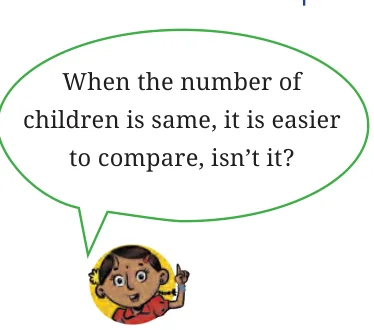
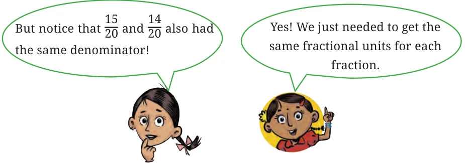
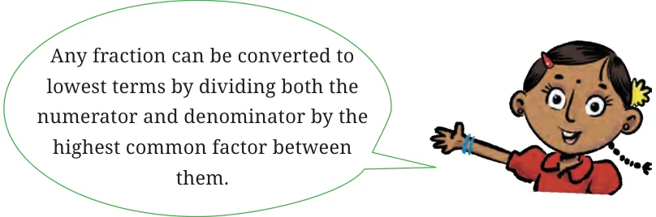

If the number of units that are shared is the same, but the number of children among whom the units are shared is more, then the share is less.
Therefore, \(\frac{4}{7} > \frac{4}{8}\) and \(\frac{4}{8} = \frac{1}{2}\), so \(\frac{4}{7} > \frac{1}{2}\).
Now I understood why you multiplied the numerator and denominator by 4.
Suppose the number of children is kept the same, but the number of units that are being shared is increased? What can you say about each child’s share now? Why? Discuss how your reasoning explains \(\frac{1}{5} < \frac{2}{5}\), \(\frac{3}{7} < \frac{4}{7}\), and \(\frac{1}{2} < \frac{5}{8}\).
Now, decide in which of the two groups will each child get a larger share:
- Group 1 : 3 glasses of sugarcane juice divided equally among 4 children.
Group 2: 7 glasses of sugarcane juice divided equally among 10 children. - Group 1 : 4 glasses of sugarcane juice divided equally among 7 children.
Group 2: 5 glasses of sugarcane juice divided equally among 7 children.

Which groups were easier to compare? Why?
Shabnam: To compare the first two groups, we have to find fractions equivalent to the fractions \(\frac{3}{4}\) and \(\frac{7}{10}\).
Mukta: How about \(\frac{6}{8} = \frac{3}{4}\) and \(\frac{21}{30} = \frac{7}{10}\)?
Shabnam: There is a condition. The fractional unit used for the two fractions have to be the same! Like \(\frac{2}{6}\) and \(\frac{3}{6}\) both use the same fractional unit \(\frac{1}{6}\) (i.e., the denominators are the same). But \(\frac{6}{8}\) and \(\frac{21}{30}\) do not use the same fractional units (they have different denominators).
Mukta: Okay, so let us start making equivalent fractions then:
\(\frac{3}{4} = \frac{6}{8} = \frac{9}{12} = \frac{12}{16} = \frac{15}{20}\) … But when do I stop?
Shabnam: Got it! How about we go on till \(4 \times 10 = 40\).
Mukta: You mean the product of the two denominators? Sounds good!
We have \(\frac{3}{4}\) and \(\frac{7}{10}\). The product of the two denominators (4 and 10) is 40.
\(\frac{3}{4} = \frac{6}{8} = \frac{9}{12} = \frac{12}{16} = \frac{15}{20} = \frac{18}{24} = \ldots = \frac{27}{36} = \frac{30}{40}\).
\(\frac{7}{10} = \frac{14}{20} = \frac{21}{30} = \frac{28}{40}\).

Shabnam: So, fractions equivalent to \(\frac{3}{4}\) and \(\frac{7}{10}\) with the same fractional unit (same denominators) are \(\frac{30}{40}\) and \(\frac{28}{40}\), or \(\frac{15}{20}\) and \(\frac{14}{20}\). Since clearly \(\frac{30}{40} > \frac{28}{40}\), we conclude that \(\frac{3}{4} > \frac{7}{10}\).
Find equivalent fractions for the given pairs of fractions such that the fractional units are the same.
- \(\frac{7}{2}\) and \(\frac{3}{5}\)
- \(\frac{8}{3}\) and \(\frac{5}{6}\)
- \(\frac{3}{4}\) and \(\frac{3}{5}\)
- \(\frac{6}{7}\) and \(\frac{8}{5}\)
- \(\frac{9}{4}\) and \(\frac{5}{2}\)
- \(\frac{1}{10}\) and \(\frac{2}{9}\)
- \(\frac{8}{3}\) and \(\frac{11}{4}\)
- \(\frac{13}{6}\) and \(\frac{1}{9}\)
Expressing a fraction in lowest terms (or in its simplest form)
In any fraction, if its numerator and denominator have no common factor except 1, then the fraction is said to be in lowest terms or in its simplest form. In other words, a fraction is said to be in lowest terms if its numerator and denominator are as small as possible.
Any fraction can be expressed in lowest terms by finding an equivalent fraction whose numerator and denominator are as small as possible.
Let’s see how to express fractions in lowest terms.
Example: Is the fraction \(\frac{16}{20}\) in lowest terms? No, 4 is a common factor of 16 and 20. Let us reduce \(\frac{16}{20}\) to lowest terms.
We know that both 16 (numerator) and 20 (denominator) are divisible by 4.
So, \(\frac{16 \div 4}{20 \div 4} = \frac{4}{5}\).
Now, there is no common factor between 4 and 5. Hence, \(\frac{16}{20}\) expressed in lowest terms is \(\frac{4}{5}\). So, \(\frac{4}{5}\) is called the simplest form of \(\frac{16}{20}\), since 4 and 5 have no common factor other than 1.
